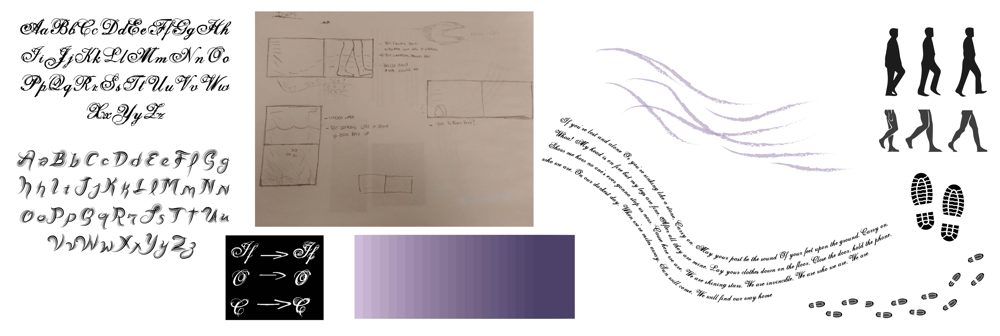

Rationale
For this project, I decided to use the song Carry On by FUN. The song talks about how no matter how bad or down you’re feeling you can always move past that and move forward and carry on. The song is very motivational where it tries to lift your spirits up after being brought down, and so I decided to focus my design on that aspect of the song. I designed the overall layout to start from the top going down and eventually going back up. I think it captures the message of the song of getting back up after being knocked down.

Font
The letters I used were Selfish as the base and Fresh Mint to combine; Selfish is more of a traditional cursive font with a small detail on the strokes whereasFresh Mint has multiple lines forming the strokes of the letter. For the lyrics, I went with a wavey flow where the text curved down and curved back up on
the next spread. The flow was to help express the message of the song more clearly by showing how not matter low you go in life you can always carry on and work your way back up.